Curious science, true stories
Short films about the strange, beautiful true stories hiding in science.
From a shrimp whose snap makes a bubble almost as hot as the Sun to a spacecraft about to be a light-day from home: each story is researched, fact-checked and told in under ninety seconds, with its sources close at hand.
Stories
36 stories so far, newest first. Each one links to its sources and to where you can watch it.
 Your Key Has Five Cuts. A Better Lock Wants Five Angles Too18 November 2026
Your Key Has Five Cuts. A Better Lock Wants Five Angles Too18 November 2026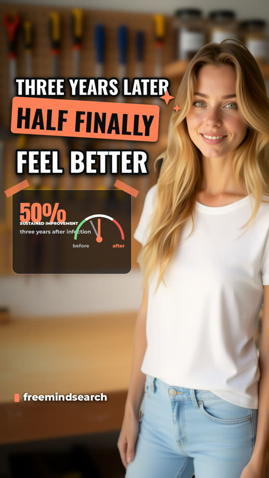
Three Years Later, Half Of Long COVID Patients Finally Improve11 November 2026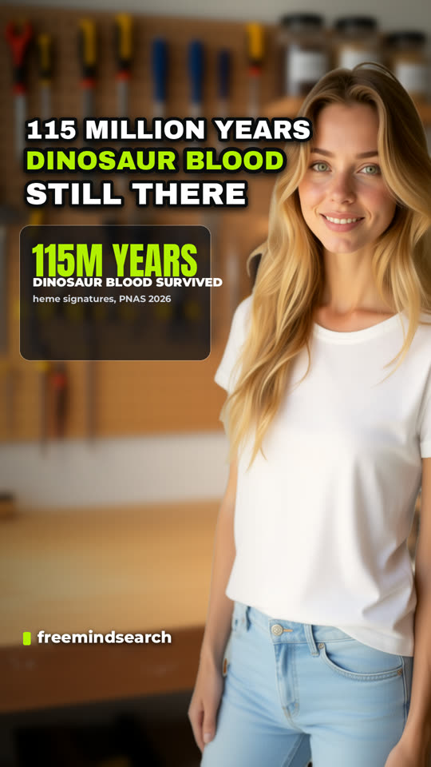
A 115-Million-Year-Old Dinosaur Still Has Blood In Its Bones11 November 2026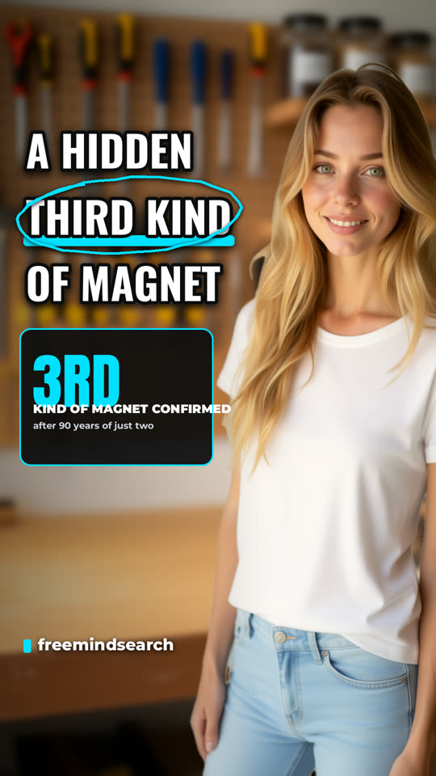
Scientists Just Found a Hidden Third Type of Magnet5 November 2026 Scientists Caught a Spider Having REM-Like Sleep5 November 2026
Scientists Caught a Spider Having REM-Like Sleep5 November 2026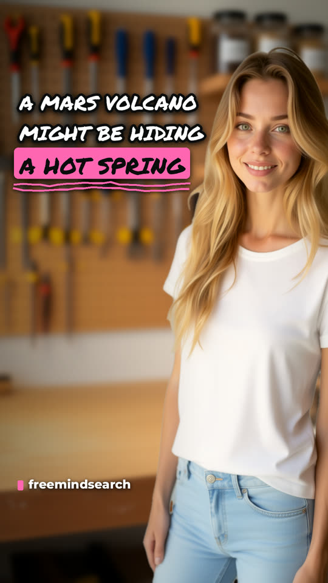
A Mars Volcano May Be Hiding a Hot Spring Like Earth's First Life5 November 2026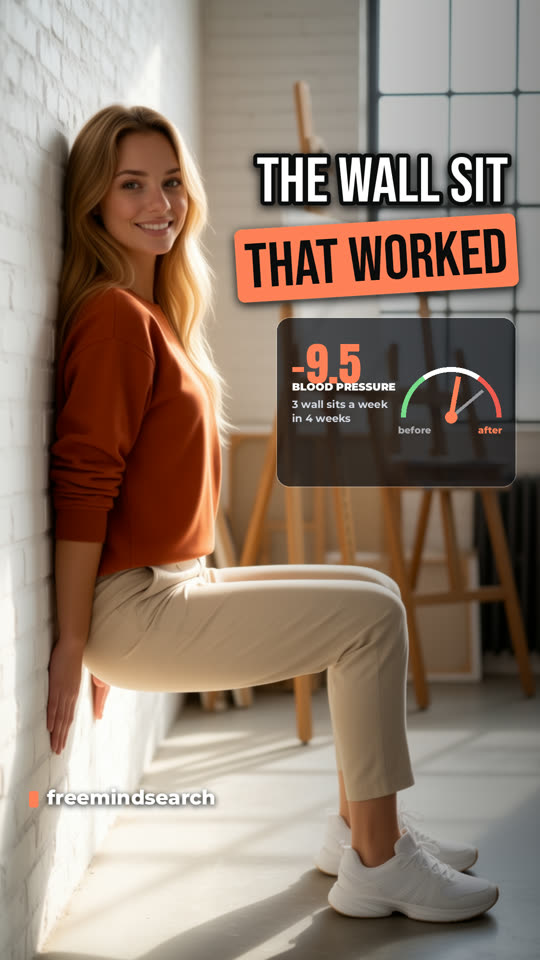
The wall sit that lowered blood pressure in a month31 October 2026 Can your face really show low iron? The 'ferritin face' trend28 October 2026
Can your face really show low iron? The 'ferritin face' trend28 October 2026 Inside your knuckle: what actually pops28 October 2026
Inside your knuckle: what actually pops28 October 2026 Coffee doesn't give you energy. Here's what it really does28 October 2026
Coffee doesn't give you energy. Here's what it really does28 October 2026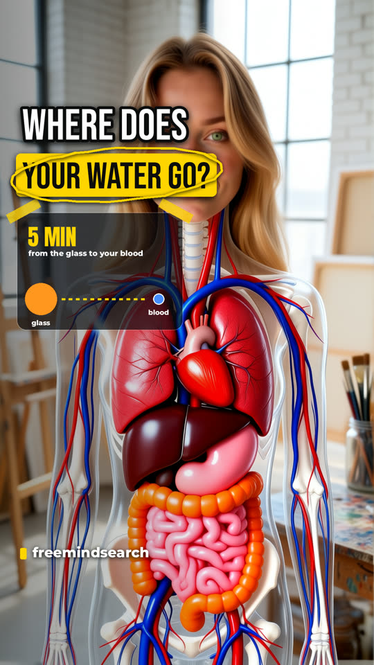
Where a glass of water goes inside you, in minutes27 October 2026 Jupiter may have shaped the dust of our solar system25 October 2026
Jupiter may have shaped the dust of our solar system25 October 2026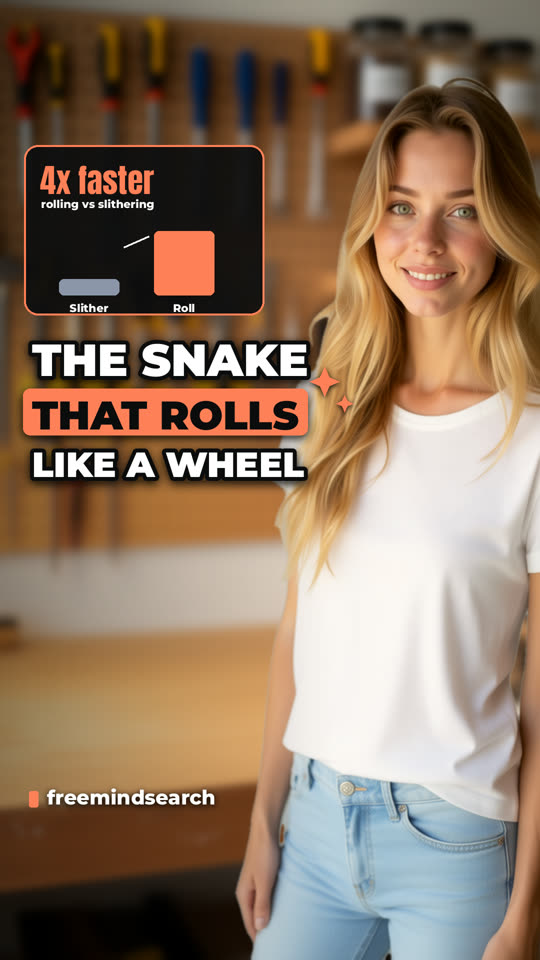
This tiny snake turns itself into a wheel to escape25 October 2026Why dental implants get infected24 October 2026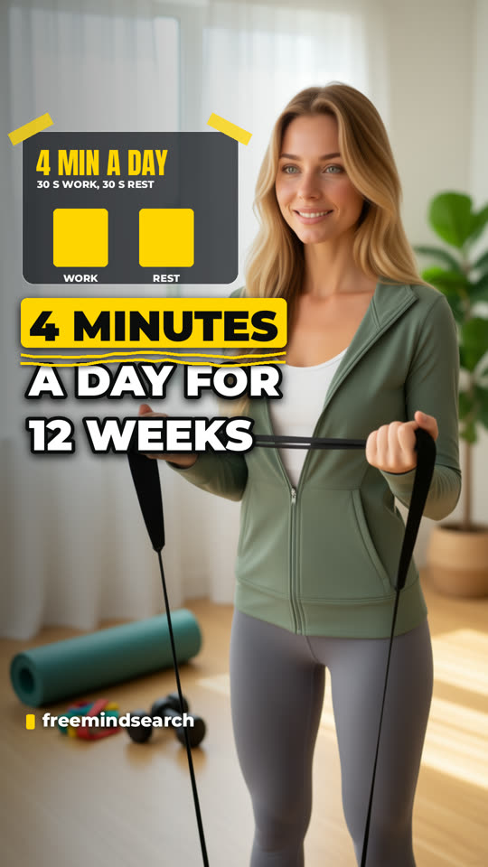
Four minutes a day helped people over 6522 October 2026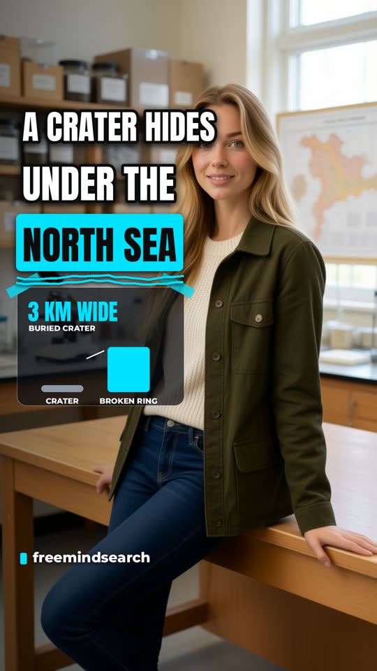
An asteroid crater hides under the North Sea22 October 2026 Europe's bees lost a third of their range in 100 years21 October 2026
Europe's bees lost a third of their range in 100 years21 October 2026 Why your phone needs Einstein to find you19 October 2026
Why your phone needs Einstein to find you19 October 2026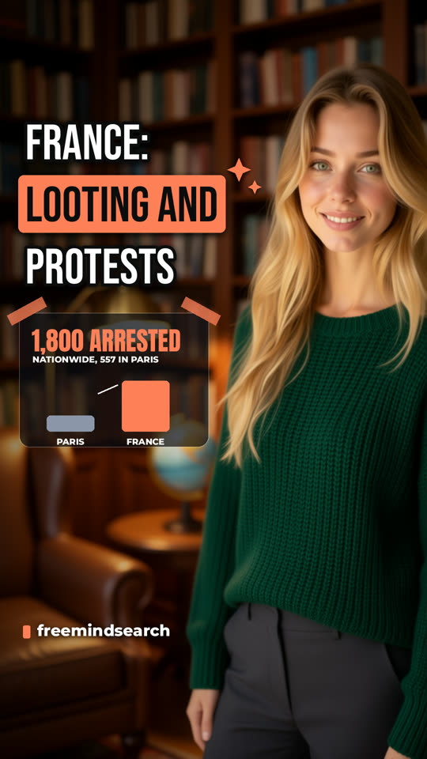
What is behind the looting and protests in France?19 October 2026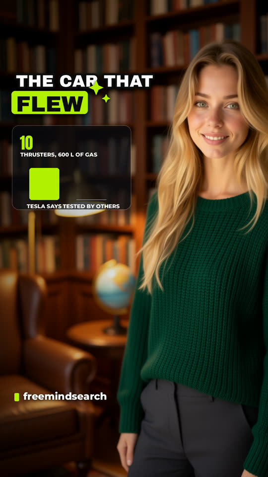
Tesla's Roadster flew with a spacecraft trick18 October 2026 Bleached coral healed by touching a healthy twin16 October 2026
Bleached coral healed by touching a healthy twin16 October 2026 Did Neanderthals use their tool glue as medicine?13 October 2026
Did Neanderthals use their tool glue as medicine?13 October 2026 Scientists found a hidden drain at the back of the eye (in mice)12 October 2026
Scientists found a hidden drain at the back of the eye (in mice)12 October 2026 A capybara tooth turned up in one of the driest deserts on Earth9 October 2026
A capybara tooth turned up in one of the driest deserts on Earth9 October 2026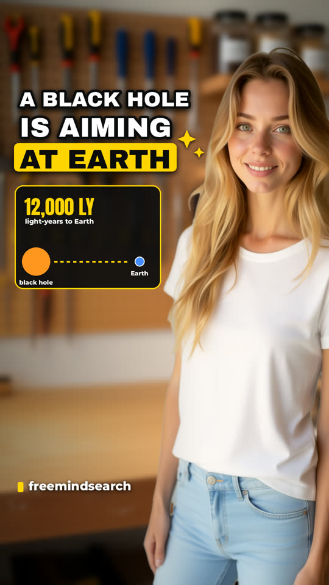
A Black Hole Is Firing a Beam of Particles at Earth7 October 2026You will fall. Get up.5 October 2026Regular exercisers' immune cells look readier to fight1 October 2026 It's New Year's Day on Mars: year 39 just began30 September 2026
It's New Year's Day on Mars: year 39 just began30 September 2026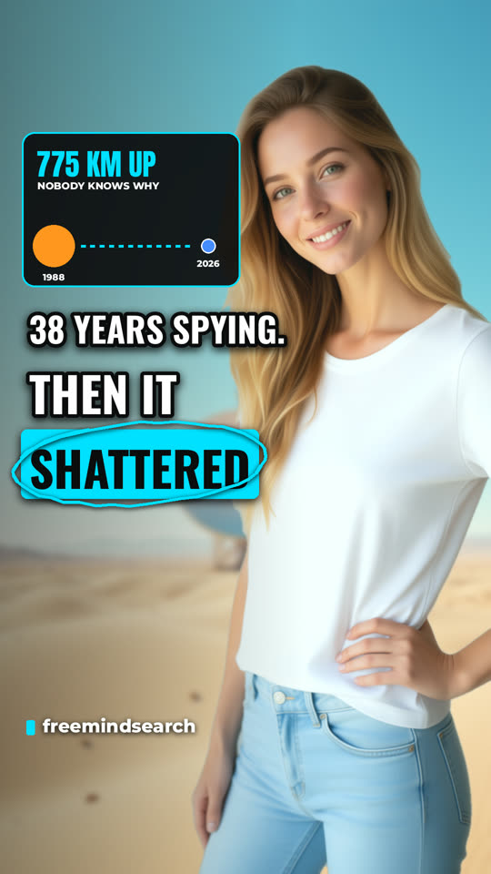
A 38-year-old spy satellite just shattered in orbit. Nobody knows why29 September 2026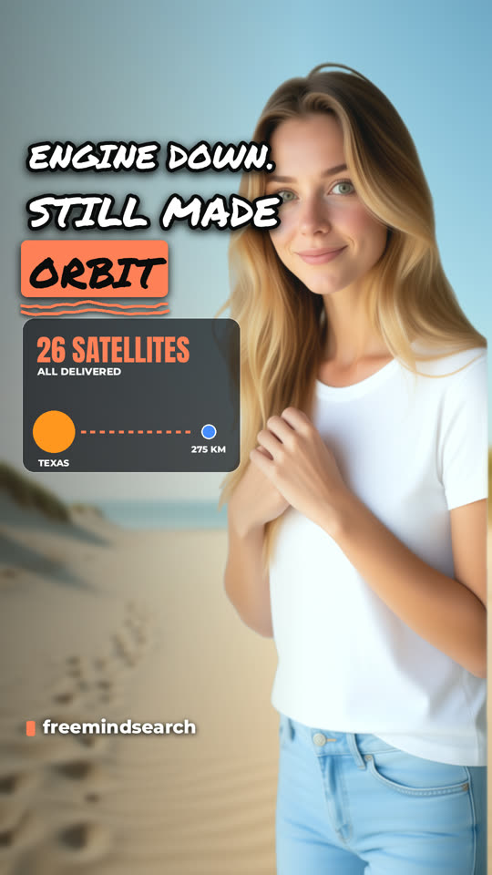
Starship reached orbit with an engine dead28 September 2026 The day the Sun set telegraphs on fire | Carrington Event 185928 September 2026
The day the Sun set telegraphs on fire | Carrington Event 185928 September 2026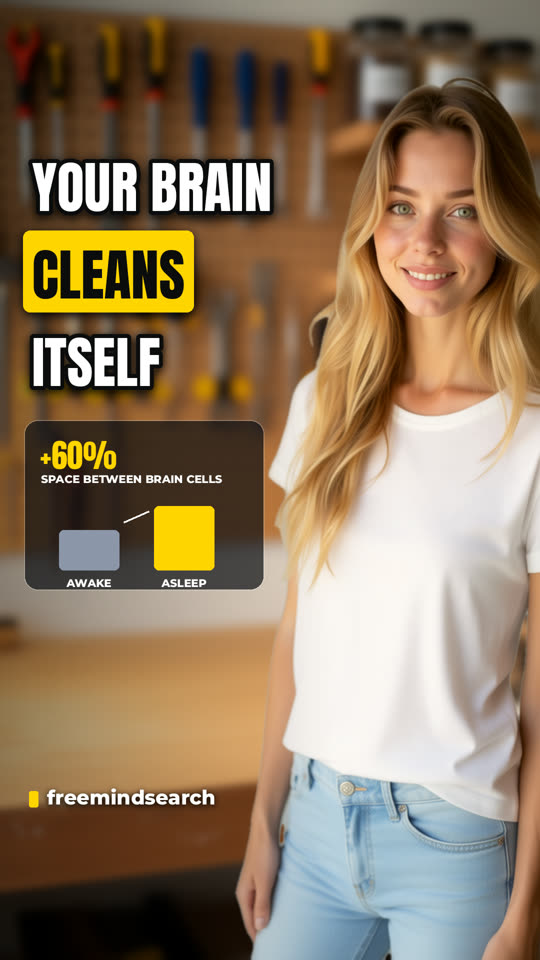
Your brain cleans itself while you sleep28 September 2026 These tiny animals survived 10 days in open space28 September 2026
These tiny animals survived 10 days in open space28 September 2026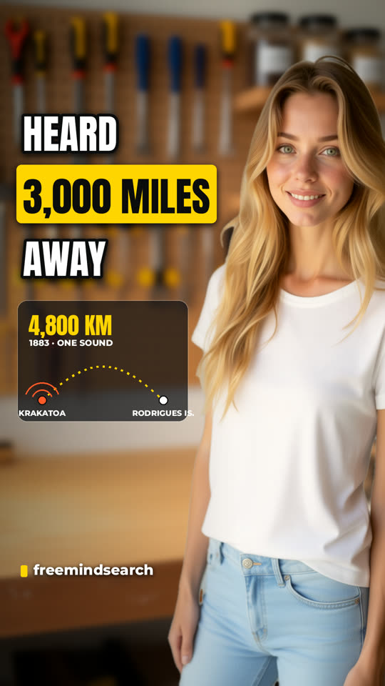
This sound was heard 3,000 miles away | Krakatoa 188328 September 2026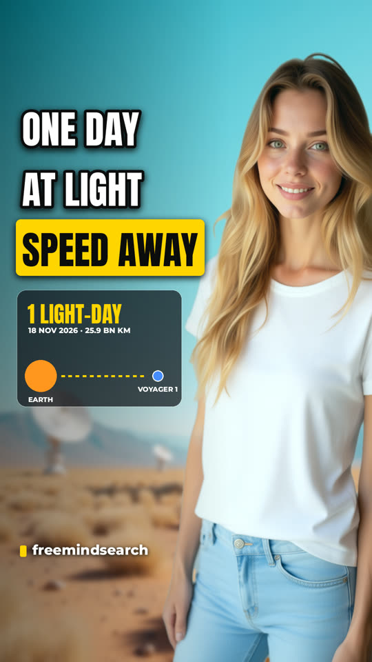
Voyager 1 is about to be one light-day from Earth27 September 2026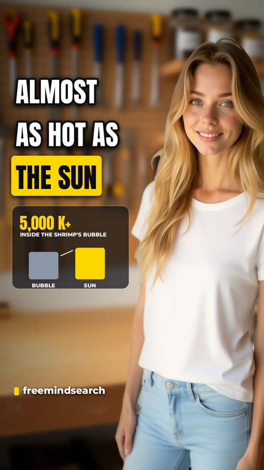
This shrimp makes a bubble almost as hot as the Sun26 September 2026How we publish
Every film is reviewed and approved by a person in freemindsearch Studio, our own desktop app, and then published to our accounts on TikTok, YouTube, Instagram, Facebook and Threads through each platform's official API. On TikTok the team signs in with TikTok's Login Kit and posts with the Content Posting API, choosing who can see each video and whether comments, Duet and Stitch are allowed. Every post carries TikTok's AI-generated content label.
Read our Privacy Policy and Terms of Service.